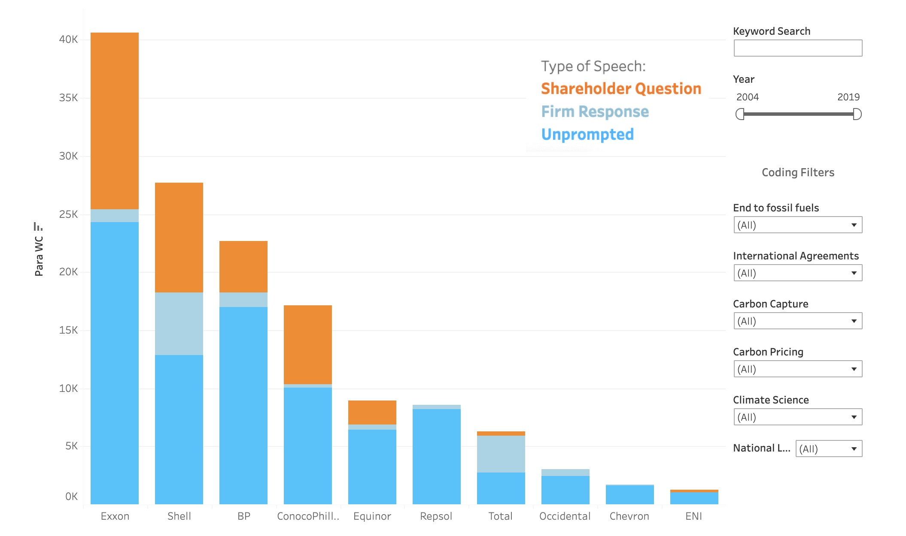

Ship-to-Ship Transfer Detection
Ship-to-Ship transfers involve two or more large cargo vessels meeting at sea and swapping cargo. This is often used to conseal the origin of cargo, and has been used extensively by Russian vessels to launder stolen Ukrainian grain. I train a neural network to automatically detect these transfers in satellite imagery.
Tracking Russia's Ghost Ships with Satellite Imagery
Identifying Unregulated Rare Earth Mines in Myanmar
I was the Principal Investigator for a joint project between the Alan Turing Institute and Global Witness, in which multiple computer vision algorithms were trained to identify illegal rare earth mining in rebel-held areas the Myanmar-China border.
Radar Interference Tracker
Many missile defense radars interfere with open source satellite imagery when they're turned on. I built a tool for Bellingcat that lets anyone monitor when and where these radars are deployed. The tool has since been featured in the Economist, Sky News, Hackaday, and beyond.

Conflict and Pollution in Iraq
I co-wrote an article for Bellingcat which investigates conflict-related pollution in Iraq. I use remote sensing, machine learning, and geolocation to trace pollution back to facilities operated by multinational oil companies and map out the impacts on nearby communities.
Ukraine Damage Assessment Tool
This tool deploys a new methodology I developed to detect building damage in Synthetic Aperture Radar imagery. It allows users to get the number and distribution of destroyed buildings in a given area, uses georeferenced footage from social media for ground-truthing.

3D Model of the Beirut Explosion
Following the 2020 Beirut explosion, blast damage assessment was carried out using two-dimensional satellite imagery which fails to capture damage done to the sides of buildings. I develop an alternative approach using Open Street Map data to create a 3D model of Beirut and the explosion to analyze directional blast damage.
Informal Settlement Mapping
I built a prototype application for the U.N. World Food Programme that identifies informal settlements using a Random Forest algorithm and open source inputs (Sentinel-2 imagery and OSM footprints).
Militant Mosaic
This interactive visualization was created as part of a paper I'm working on. The mosaic is composed of 20,000 images scraped from the insurgents' obituary website.

Insurgent Photo Networks
I built an open-source Python package that uses deep learning to create a social network graph based on co-appearance in photographs. When applied to a folder of over 20,000 images scraped from a militant group's website, the resulting network closely mirrors the known structure of the insurgent group.
Saudi Missile Strike Investigation
In 2019, two Saudi Aramco facilities were hit by cruise missiles leading to the largest 1-day spike in the price of oil ever recorded. The expert consensus is that the attack succeeded because the Saudis were caught off guard. Open-source radar interference from Saudi air defenses may suggest otherwise.
Fixing Election Maps with Streetlights
Rural counties take up lots of space on election maps despite being sparsely populated, creating significant visual bias. I develop a new approach to correcting this bias using nighttime satellite imagery. This post won the 2020 Mapbox Election Mapping Challenge
Turkish Elections Data
This tool visualizes 2,975,843 ballot-box level election results in Turkey spanning over 10 years and 20 elections. Data was acquired by scraping the Turkish Election Board's website using Selenium in Python.

Hasankeyf's Last Vote
Months before being flooded, 55% of a town that is currently underwater voted for the party that built the dam. What follows is a geospatial analysis of this historic event, and the strange political economy that led to it.

High Resolution Drought Index
This post outlines a workflow for the calculation of a high-resolution version of the Stardardized Precipitation-Evapotranspiration Index (SPEI). This is accomplished in four steps, utilizing Python, R, and JavaScript.
Syria Makeshift Refinery Detection
This tool uses machine learning and multispectral satellite imagery to identify oil spills resulting from makeshift oil wells and refineries operated in Northern Syria. Users can draw an box over the map to count the number of unique spills detected, as well as an estimate of the total contaminated area.
Village Voronoi Polygons
Using the latitude and longitude coordinates of human settlements in Pakistan, I create polygons that approximate the shape of villages using a Voronoi tesselation in Python.

Shareholder Pressure on Oil Companies
How often do oil and gas companies talk about climate change? How do shareholders exert pressure on these issues? This project analyzes the text from 1,656 earnings calls-- over 16,000,000 words in total-- to provide answers.